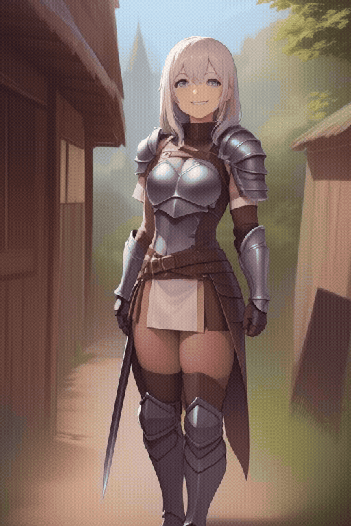

生成完整角色動畫 - 1

使用提示詞:
"0" :"novice adventurer, simple leather armor, wooden sword, village, morning light, smile",
"10" :"novice adventurer, simple leather armor, wooden sword, village, morning light, smile",
"20" :"novice adventurer, simple leather armor, wooden sword, village, morning light, smile",
"30" :"skilled warrior, iron armor, steel broadsword, dark forest, glowing mushrooms, serious focus",
"40" :"skilled warrior, iron armor, steel broadsword, dark forest, glowing mushrooms, serious focus",
"50" :"skilled warrior, iron armor, steel broadsword, dark forest, glowing mushrooms, serious focus",
"60" :"elite knight, silver plate armor, glowing magical sword, ruined castle, storm, fierce wind",
"70" :"elite knight, silver plate armor, glowing magical sword, ruined castle, storm, fierce wind",
"80" :"elite knight, silver plate armor, glowing magical sword, ruined castle, storm, fierce wind",
"90" :"legendary hero, golden divine armor, holy sword of light, floating island, cosmic sky, majestic",
"100" :"legendary hero, golden divine armor, holy sword of light, floating island, cosmic sky, majestic",
"110" :"legendary hero, golden divine armor, holy sword of light, floating island, cosmic sky, majestic"
|
生成完整角色動畫 - 2
使用提示詞:
"0" :"dawn, bedroom, pajamas, holding coffee mug, soft morning sunlight, waking up",
"10" :"dawn, bedroom, pajamas, holding coffee mug, soft morning sunlight, waking up",
"20" :"dawn, bedroom, pajamas, holding coffee mug, soft morning sunlight, waking up",
"30" :"noon, busy city street, modern streetwear, sunglasses, bright sun, energetic",
"40" :"noon, busy city street, modern streetwear, sunglasses, bright sun, energetic",
"50" :"noon, busy city street, modern streetwear, sunglasses, bright sun, energetic",
"60" :"dusk, golden hour, elegant evening dress, rooftop, sunset city view, warm breeze",
"70" :"dusk, golden hour, elegant evening dress, rooftop, sunset city view, warm breeze",
"80" :"dusk, golden hour, elegant evening dress, rooftop, sunset city view, warm breeze",
"90" :"midnight, cyberpunk street, neon lights, techwear, glowing umbrella, rain, cinematic lighting",
"100" :"midnight, cyberpunk street, neon lights, techwear, glowing umbrella, rain, cinematic lighting",
"110" :"midnight, cyberpunk street, neon lights, techwear, glowing umbrella, rain, cinematic lighting"
|
生成完整角色動畫 - 3

使用提示詞:
"0" :"astronaut trainee, orange flight suit, launchpad, clear blue sky, confident smile",
"10" :"astronaut trainee, orange flight suit, launchpad, clear blue sky, confident smile",
"20" :"astronaut trainee, orange flight suit, launchpad, clear blue sky, confident smile",
"30" :"zero gravity, inside spaceship, white space suit, floating water droplets, looking out window, Earth view",
"40" :"zero gravity, inside spaceship, white space suit, floating water droplets, looking out window, Earth view",
"50" :"zero gravity, inside spaceship, white space suit, floating water droplets, looking out window, Earth view",
"60" :"spacewalk, full spacesuit with visor, outer space, glowing purple nebula, floating, stars",
"70" :"spacewalk, full spacesuit with visor, outer space, glowing purple nebula, floating, stars",
"80" :"spacewalk, full spacesuit with visor, outer space, glowing purple nebula, floating, stars",
"90" :"alien planet surface, futuristic exploration gear, bioluminescent plants, twin moons, glowing atmosphere",
"100" :"alien planet surface, futuristic exploration gear, bioluminescent plants, twin moons, glowing atmosphere",
"110" :"alien planet surface, futuristic exploration gear, bioluminescent plants, twin moons, glowing atmosphere"
|